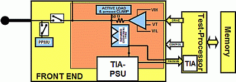
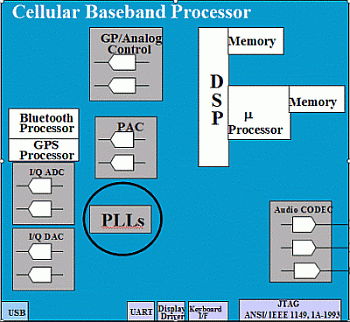
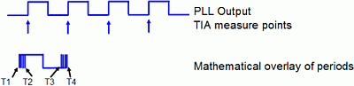
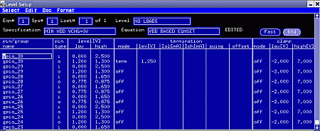
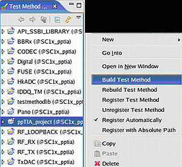
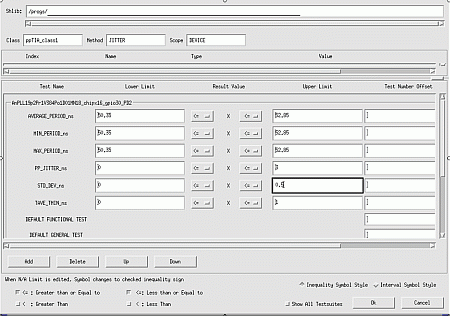
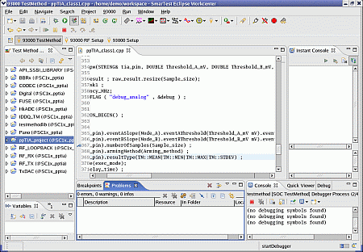

Reducing the Cost-Of-Test by using Per Pin Time Interval Analyzer
Donald W. Blair, Verigy
Paper ID 109999
Abstract
System-on-Chip (SOC) devices are very complex, multi-discipline devices which require a wide range of tests, sometimes including RF, digital, analog mixed signal and DC setups and measurements. Often there is also a need to make period, time interval and jitter measurements. Although there are other methodologies to make these measurements, they have cost drawbacks in either test time or capital expense. Previously, a general trend was to use an external Time Interval Analyzer (TIA) as part of the manufacturing solution. This provided a correlated and stable solution. However, it had certain cost drawbacks as well as not being an integrated solution. This non-integrated aspect created additional complexity in terms of calibration, diagnostics and hardware and cable routing on a DUT board or test head.
Introduction
Verigy historically has been driving down the cost of test and one of the ways they accomplish this is by integrating more features and capability into the system. The Pin Scale series of digital cards integrates a TIA into every digital pin (Per Pin TIA - PPTIA) as shown in figure 1.

Figure 1. Verigy V93000 Pin Scale PPTIA
This level of integration makes it very effective in terms of both reducing capital cost and reducing test execution time, making it an ideal manufacturing solution.
This paper will explore in detail the task of creating a production test using the Pin Scale PPTIA. This example is based on a project using a real device, a large wireless telecommunications company's cellular baseband processor. This project converted their test program from using the external TIA to using the Verigy PPTIA. It will examine all aspects of this conversion including coding and calibration. It will also provide an example of six converted test measurements and look at the correlation and test execution time of all these measurements.
1.1 Getting Started
The device-under-test (DUT) is a cellular baseband processor and is shown in Figure 2.

Figure 2. Generic Cellular Baseband Processor
The blue circle highlights some of the phase locked loops (PLLs) on the device. These are essential to the internal clocking of the device. There are actually five PLLs that are multiplexed to one output pin. The device has digital vectors that set up which of the PLLs will come out to the measurement pin. They run at different frequencies.
1.2 Defining the Test Parameters
Different companies can have different definitions for a test parameter, so it is always advisable to clearly define the measurement. This test section measures six parameters. The basic measurement is shown in Figure 3.

Figure 3. PPTIA Measurement Basics
The PPTIA makes a measurement on the rising edge of the PLL and does a mathematical overlay of N averages (user defined). T1 is the earliest first rising edge, T2 the latest first rising edge, T3 is the earliest second rising edge and T4 is the latest second rising edge.
The test parameters themselves are defined as:
- Tmin, minimum period, time from T2 to T3
- Tmax, maximum period, time from T1 to T4
- Tmean, mean period, mean of all periods measured
- TjitterPP, Peak-to-Peak Jitter, Tmax - Tmin
- Tstd_dev, standard deviation of jitter, Sigma of TjitterPP
- Tave-min, mean period - minimum period
Steps to the Conversion
All of the steps required to do this conversion will be explored. The PPTIA portions of this are exactly the same as if this test were developed from nothing.
Licensing
First, the PPTIA is a licensed resource. Licensing is key to reducing the capital expense for an ATE because the resource is only paid for while it is being used. It is a poor use of capital to buy a piece of equipment and not fully utilize it. Verigy calls this "scalability", and it allows an IC manufacturer to buy equipment at the lowest price possible and then utilize additional features only when a test program actually needs it. This allows great flexibility because any digital pin can have the PPTIA license enabled. This simplifies DUT board pin routing. Different applications can use different pins and the license is only used while the test program is loaded.
To use the PPTIA, all that is required is to add "ppTia" to the pins requiring a PPTIA in the test program's model file. In this case, quad site is being done to further reduce cost-of-test (COT) through parallelism; so four licenses are needed. The syntax is the same for each:
IOCHANNEL 10101-10104 : HW = PS800, speed = 400Mbps, smem = 2M, vmem = 28M , ppTia
PPTIA Calibration
The PPTIA has its own special calibration routine. The default is that this special calibration is not configured as part of the standard system calibration for those users who Do not use the PPTIA. However this can be easily added so that it is part of the standard system calibration. It is recommended to run the calibration on all pins since, as mentioned above, different applications can and will use different pins as a PPTIA resource.
Test Program Source Code
Verigy supplies libraries that are written in Test Methods APIs that run under the V93000 operating system called SmarTest. The libraries are located at "/opt/hp93000/soc/TestMethod" on the system itself. It is highly recommended to use these libraries since they are already debugged and test time optimized.
The actual test method code is shown:
//Section1
ARRAY_D raw_result; raw_result.resize(Sample_size);
PPTIA_TASK task1 ;
DOUBLE frequency_MHz;
GET_TESTFLOW_FLAG ( "debug_analog" , &debug ) ;
// Section 2
ON_FIRST_INVOCATION_BEGIN() ;
{
task1.pin(tia_pin).eventASlope(Mode_A).eventAThreshold(Threshold_A_mV mV).eventACount(0) ;
task1.pin(tia_pin).eventBSlope(Mode_B).eventBThreshold(Threshold_B_mV mV).eventBCount(0) ;
task1.pin(tia_pin).numberOfSamples(Sample_size) ;
task1.pin(tia_pin).armingMethod(Arming_method) ;
task1.pin(tia_pin).resultType(TM::RESULT_ALL) ;
task1.execMode(exec_mode);
task1.delay(Delay_time) ;
task1.pin(tia_pin).sampleRandomizeRatio(0.5);
task1.enable TimeoutFlag();
task1.preAction(TM::SET_TIA_MODE).execute() ;
}
ON_FIRST_INVOCATION_END() ;
// Section 3
glob_avg = task1.getValue(tia_pin , TM::MEAN) ;
glob_min = task1.getValue(tia_pin , TM::MIN) ;
glob_max = task1.getValue(tia_pin , TM::MAX) ;
glob_stdev = task1.getValue(tia_pin , TM::STDEV) ;The code in section 1 is basic housekeeping; setting up arrays, variables and the PPTIA_task name. The PPTIA_task is a structure where the setup parameters can be defined on a line-by-line basis.
Section 2 sets up the multi-site structure ON_FIRST_INVOCATION so that the actual setup and measurement is only done one time for all four sites. The rest of the code enclosed there is setting up the PPTIA parameters for this specific PLL measurement, assigning threshold levels and modes so that the measurement is performed as shown in Figure 3. Notice these are all variable names and these variables are passed to this routine from the Test Flow test suite dialog variables. The enable TimeoutFlag task enables the timeout flag. If a timeout occurs on a site, the test method will not cause an error but continue its execution. On multi-site testing, the time out on one site will not stop execution for other sites. This is very important for multi-site testing.
Section 3 simply reads the values out of the hardware. All of the parameters can be read out in one line; however there were other parameters not required for these tests that would take extra test execution time to read.
Setting the Load on the Pin
The PLL pin will need to have a load put on it to minimize reflections and other perturbations. A resistor could be put on the DUT board, but there is no need to do this with the hardware built into the pin electronics of the V93000. Either of two methods can be used, use the TERM mode which uses the driver's 50 Ohm as a load or use the active load which will source and sink currents like a resistor. The TERM mode was selected in this case as shown in Figure 4.

Figure 4. Load Termination for the PLL
Compile and Build the PPTIA Project
It is recommended that the PPTIA code be its own project and directory. This way the code can easily be copied as a directory into any other application. Also this code was made with general purpose use consideration and by passing variables in, it can easily be a library for many devices. Simply select the PPTIA project name and use the right mouse click menu to "build" it. Build will automatically compile and register it as a valid test method so that any test suite can use it, as shown in Figure 5.

Figure 5. Building the PPTIA Test Method
TestFlow Addition
Now the test can be added (or modified) in the test flow. For a conversion, select the test suite that had used the external TIA. For a new test suite, add it and fill in all of the setup files required to get the PLL running for this test. Select the testmethod as the one registered in the previous step. Now modify the test suite dialog variables as shown in Figure 6. These will be passed into the testmethod shown above. Also modify the test parameters and their limits.

Figure 6. Test Suite Dialog Window Variables
Run and Debug the PPTIA Test
Use the Eclipse Test Method debugger to run and debug the test as shown in Figure 7. Make sure the PLL has an output with the scope tool. Adjust the delay and threshold variables through the test suite dialog window or through the Instant Console of the Test Method debugger to get the tests working and stable.

Figure 7. Using the Test Method Debugger to Run the PPTIA Tests
Correlation
Once the test is working and stable, it needs to be correlated either to the previous external TIA or to some other bench equipment. The statistical mean and sigma for each measurement was compared from the external TIA to the PPTIA. Note that it was possible to reduce the number of samples taken from 1250 with the external TIA to 256 with PPTIA, which saved test time. Test time was reduced from 600 ms to 140 ms using the PPTIA.
Results Analysis
Mean Differences of External TIA versus PPTIA (All Units in nS)
|
External TIA |
PPTIA |
Difference |
|---|---|---|---|
Test1 |
|
|
|
AVG PER |
50.863 |
50.868 |
-0.005 |
MIN PER |
50.599 |
50.625 |
-0.026 |
MAX PER |
52.133 |
52.14 |
-0.007 |
STD_DEV |
0.322 |
0.358 |
-0.036 |
Pk-PkJitter |
1.534 |
1.514 |
0.019 |
Tavg-Tmin |
0.322 |
0.243 |
0.078 |
Test 2 |
|
|
|
AVG ER |
500 |
499.99 |
0.01 |
MIN ER |
499.73 |
499.77 |
-0.04 |
MAX ER |
500.29 |
500.24 |
0.05 |
STD_DEV |
0.168 |
0.127 |
0.04 |
Pk-PkJitter |
0.562 |
0.461 |
0.10 |
Tavg-Tmin |
0.271 |
0.211 |
0.05 |
Test 3 |
|
|
|
AVG ER |
13.023 |
13.008 |
0.015 |
MIN ER |
12.911 |
12.876 |
0.035 |
MAX ER |
13.118 |
13.104 |
0.014 |
STD_DEV |
0.036 |
0.0426 |
-0.006 |
Pk-PkJitter |
0.206 |
0.2278 |
-0.021 |
Tavg-Tmin |
0.111 |
0.1325 |
-0.021 |
Test 4 |
|
|
|
AVG ER |
20.833 |
20.803 |
0.03 |
MIN ER |
20.623 |
20.554 |
0.069 |
MAX ER |
21.047 |
21.006 |
0.041 |
STD_DEV |
0.133 |
0.1265 |
0.006 |
Pk-PkJitter |
0.424 |
0.4520 |
-0.028 |
Tavg-Tmin |
0.21 |
0.2492 |
-0.039 |
Test 5 |
|
|
|
AVG PER |
20.834 |
20.826 |
0.008 |
MIN PER |
20.608 |
20.541 |
0.067 |
MAX PER |
21.02 |
21.028 |
-0.008 |
STD_DEV |
0.137 |
0.1268 |
0.010 |
Pk-PkJitter |
0.411 |
0.4869 |
-0.075 |
Tavg-Tmin |
0.226 |
0.2845 |
-0.058 |
Sigma Differences of External TIA versus PPTIA (All Units in nS)
|
External TIA |
PPTIA |
Difference |
|---|---|---|---|
Test 1 |
|
|
|
AVG PER |
0.0015 |
0.0211 |
-0.0195 |
MIN PER |
0.0358 |
0.0203 |
0.0155 |
MAX PER |
0.0292 |
0.0261 |
0.0031 |
STD_DEV |
0.0062 |
0.0373 |
-0.0310 |
Pk-PkJitter |
0.0497 |
0.0330 |
0.0167 |
Tavg-Tmin |
0.0356 |
0.0380 |
-0.0024 |
Test 2 |
|
|
|
AVG PER |
0.0031 |
0.0039 |
-0.0008 |
MIN PER |
0.0626 |
0.0428 |
0.0197 |
MAX PER |
0.0720 |
0.0511 |
0.0209 |
STD_DEV |
0.0291 |
0.0149 |
0.0142 |
Pk-PkJitter |
0.0943 |
0.0606 |
0.0336 |
Tavg-Tmin |
0.0618 |
0.0449 |
0.0168 |
Test 3 |
|
|
|
AVG PER |
0.0019 |
0.0055 |
-0.0035 |
MIN PER |
0.0282 |
0.0172 |
0.0110 |
MAX PER |
0.0192 |
0.0117 |
0.0075 |
STD_DEV |
0.0641 |
0.0032 |
0.0609 |
Pk-PkJitter |
0.0357 |
0.0242 |
0.0114 |
Tavg-Tmin |
0.0281 |
0.0171 |
0.0110 |
Test 4 |
|
|
|
AVG PER |
0.0105 |
0.0092 |
0.0012 |
MIN PER |
0.0575 |
0.0690 |
-0.0114 |
MAX PER |
0.0438 |
0.0486 |
-0.0047 |
STD_DEV |
0.0173 |
0.0233 |
-0.0059 |
Pk-PkJitter |
0.0638 |
0.0489 |
0.0148 |
Tavg-Tmin |
0.0563 |
0.0646 |
-0.0083 |
Test 5 |
|
|
|
AVG PER |
0.0092 |
0.0114 |
-0.0022 |
MIN PER |
0.0690 |
0.0888 |
-0.0198 |
MAX PER |
0.0403 |
0.0531 |
-0.0128 |
STD_DEV |
0.0212 |
0.0259 |
-0.0046 |
Pk-PkJitter |
0.0807 |
0.0960 |
-0.0152 |
Tavg-Tmin |
0.0672 |
0.0924 |
-0.0252 |
Conclusion: Benefits of Using the PPTIA
Using the PPTIA has the following benefits:
- Lower Capital Cost - small fraction of the price of an external TIA
- Faster Test Time - 140 ms versus 600 ms (external TIA)
- DUT Board - no relays for the TIA and more flexibility for layout and routing
- Test Head - fewer cables running to test head than with external TIA
- Integrated Solution - no multi-vendors for ATE and a smaller footprint
- Calibration and Diagnostics - all part of SmarTest
- Availability - any Pin Scale digital pin
References
[1] Verigy Applications Note: Frequency Testing on the V93000 SOC by Juergen Wolf, Joe Kelly and Michael Braun, March 2007.
[1] Block diagram (figure 2) from the 2002 Verigy Seminar "Testing High Integration Wireless Baseband Processors"
Special thanks to Scott Chesnut, Michael Kozma and Gianluca Lombardi for their assistance in this project
Biography
Donald W. Blair - Bachelor of Science in Electronic Engineering Technology Degree. Graduated with a Bachelor's degree from the Ohio Institute of Technology in Columbus Ohio. Employed by Schlumberger, and then later employed by Verigy parent companies, HP and Agilent (now Verigy) developing applications on various mixed signal tester platforms. Later became a Principal Technical Consultant and has been with Verigy for over 20 years.